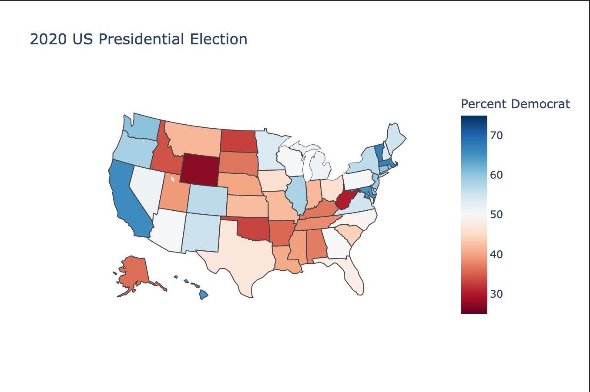

Questions
Code Examples
Exercises
Lesson 50 Solution
We will not have any homework this week as we have finished up this mini section within the block of our APIs and libraries section. Let's review a potential solution to last week's homework. Maybe you did something completely different this week. That's perfectly acceptable too. Take this as a sample answer and compare it to your own. Look at the graphic attached and I'll talk through my solution below. The one piece of information I would love to add is the electoral votes in Maine and Nebraska which are allocated slightly differently to other states.
import plotly.express as px
import plotly.graph_objects as go
import pandas as pd
electionData = pd.read_csv('us_2020_election.csv')
stateMap = px.choropleth(
electionData,
locations='State Code',
locationmode='USA-states',
scope="usa",
color="Percent Democrat",
hover_name="State",
hover_data=["Democrat", "Republican",
"Percent Democrat", "Percent Republican",
"Electoral Votes"],
range_color=[25, 75],
color_continuous_scale="RdBu",
title="2020 US Presidential Election")
stateMap.show()
This graph has a title; straight away you know what data we're looking at. We are showing this election data on a map. This allows you to see how each of the 50 states voted at a glance. The map is interactive. If you run this code from your end, you can hover over a state with your cursor and see more information such as the number of votes in the electoral college allotted to that state. The data is shown on a state level as opposed to a country by country level (which makes no sense for American) elections or a county by county level (which may be interesting but does not show how the votes of the electoral college was allocated).
The colour scale used is red and blue. The colour scale uses 25% and 75% as its limits. This because no state voted for a candidate outside of these proportions. This allows us to see the states which were more pro Trump or pro Biden based on their colour. It also shows which states were close more quickly. The states that are a darker red voted heavily for Trump. The states that are deeper blue much preferred Biden. Red is typically associated with the Republican Party and blue is typically associated with the Democratic Party in the US. The whiter states were toss-ups. This shows the viewer how close the election was in states like Georgia and Pennsylvania. This is an example of how colour can be used to show particular data.